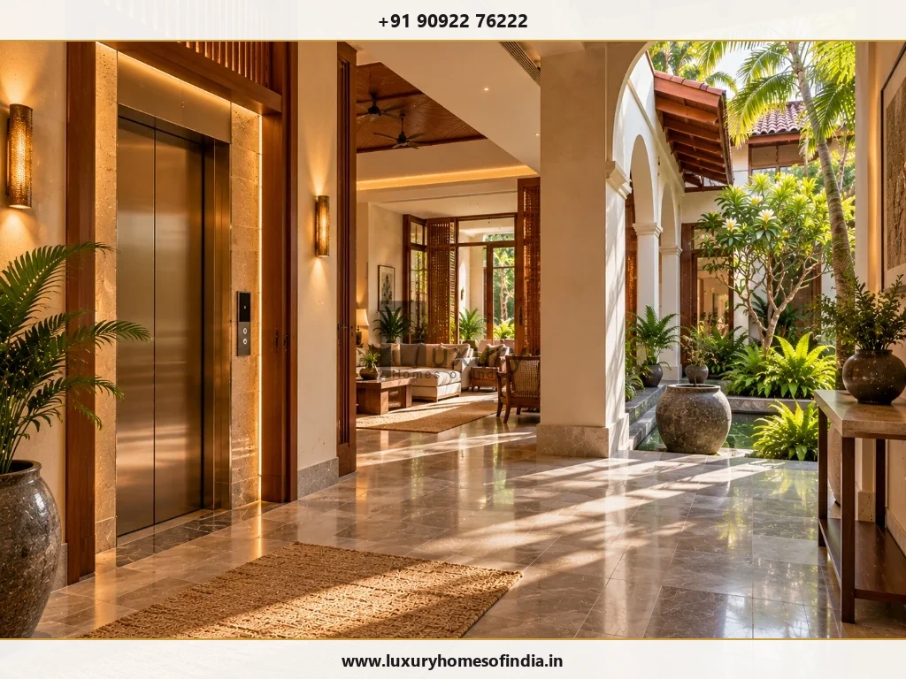
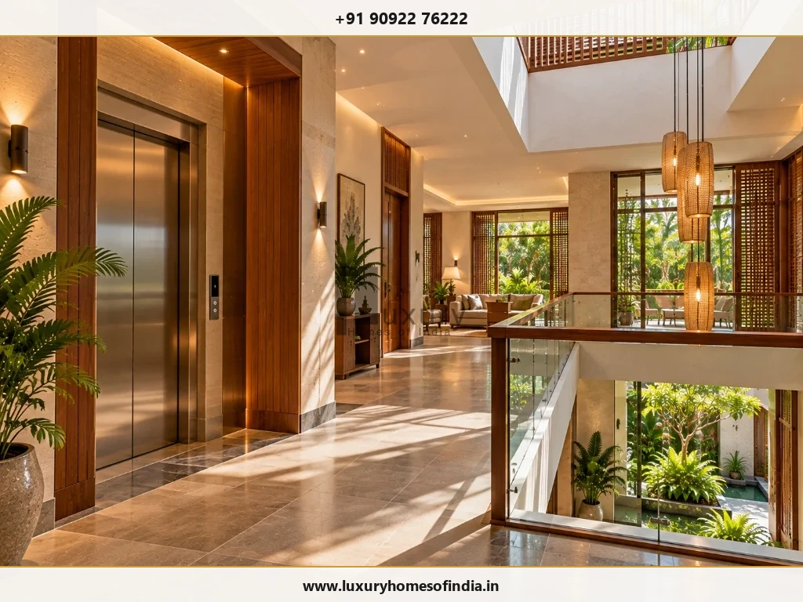
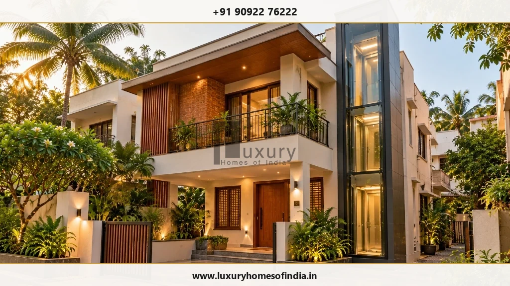
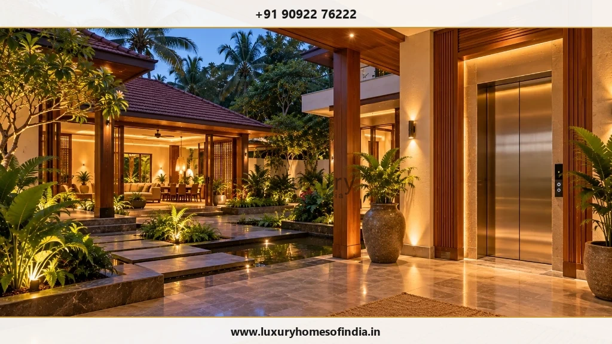

Luxury Home Elevator in Chennai
Plan easier movement between floors without compromising your home's design.
Key Takeaways: Private Elevator Planning
- Architectural Integration First: A residential elevator must be incorporated into floor plans early to align structural RCC shafts, headroom clearance, and landing circulation.
- Drive System Trade-offs: Hydraulic lifts require a pit and machine area; gearless traction lifts offer high speed and low energy; vacuum/pneumatic lifts eliminate deep pits but have smaller cabin capacities.
- Power Backup & Emergency ARD: Chennai power transitions require an Automatic Rescue Device (ARD) battery backup system to lower the cabin safely during power cuts.
- Accessibility Engineering: Wheelchair-friendly lifts require a minimum 1100mm x 1400mm clear cabin footprint and automatic sliding doors.
- Turnkey Scope Boundaries: Civil shaft construction, electrical rough-ins, and landing marble work are managed by the builder, while equipment supply, testing, and maintenance are handled by the lift specialist.
A home elevator can be considered as part of a multi-storey residence when you want easier movement between levels, greater convenience, or planning flexibility for changing household needs over time. Whether building a G+2 luxury villa in ECR or a multi-generational residence in Anna Nagar, seamless vertical transport enhances everyday living comfort.
However, an elevator is not simply a appliance to add after the architectural design is finalized. Its physical dimensions affect structural foundations, slab cutouts, electrical sub-panels, foyer circulation, landing interiors, and future maintenance access. If you are planning a luxury home elevator in Chennai, bring the requirement into your luxury home planning brief early.
At Luxury Homes of India, the home's architectural and construction provisions are engineered around your chosen elevator system. Equipment selection, supply, installation, commissioning, and ongoing maintenance should be confirmed with an appointed elevator specialist according to the project's agreed scope schedule.

Start with the people who will use it
The right starting point for elevator planning is not selecting cabin finishes—it is defining the human requirements of your household:
- Occupant Profiles: Who will use the elevator daily (elderly parents, children, guests, service staff)?
- Served Floors: Number of landing stops required (basement parking, ground foyer, bedroom floors, rooftop terrace).
- Mobility Aids: Need to accommodate wheelchairs, stretchers, or heavy luggage carts.
- Entry & Exit Geometry: Single-entry, opposite-thru entry, or adjacent 90-degree landing door configurations.
- Circulation Flow: Relationship between elevator landings, staircases, and living areas.
- Future Needs: Ensuring long-term accessibility as family mobility requirements evolve.
A residential elevator should not automatically be assumed suitable for every accessibility need. Confirm clear cabin dimensions, doorway widths, control button heights, landing clearances, and safety features with the appointed elevator specialist.

Bring the elevator into the architectural plan
An elevator requires far more than an empty floor cutout. Its position influences floor plans, structural framing, and room relationships across every level:
Location and Access
Position the elevator shaft where it supports natural movement without disrupting quiet bedroom privacy or main entertaining spaces. Placing it adjacent to the primary staircase creates an intuitive central circulation core.
Landing Areas
Provide a minimum 4 to 5 feet of clear, unobstructed landing space in front of elevator doors on every served floor to allow safe entry, exit, and turning clearance.
Structural Provisions
Work with your structural engineering team to design RCC pit walls, top slab overhead anchor points, and lintel beams according to manufacturer equipment drawings.
Electrical Requirements
Coordinate dedicated 3-phase electrical power supply lines, isolated circuit breakers, and battery backup (ARD) connections with qualified electrical engineers.
Maintenance Access
Ensure machine rooms, control cabinets, or pit access doors remain easily accessible for routine technician servicing without disturbing main living areas.

New home construction vs. existing home retrofit
Planning a New Home
Incorporating an elevator during new villa construction offers ultimate freedom. Pit depth (typically 300mm to 1000mm), overhead headroom (typically 2800mm to 3600mm), structural RCC shafts, and 3-phase electrical provisions can be seamlessly integrated into your CMDA building approval drawings.
Retrofitting an Existing Home
Adding an elevator to an existing Chennai home requires an upfront structural feasibility audit. If cutting through existing RCC floor slabs is impractical, an external glass shaft attached to the building envelope or a pitless pneumatic vacuum lift can be explored.
Compare technical suitability—not appearance alone
Residential elevator drive systems differ significantly in their building requirements, energy consumption, cabin speed, and structural impact:
| Drive System Type | Key Technical & Architectural Considerations |
|---|---|
| Gearless Traction (MRL) | Smooth ride, high energy efficiency, no separate machine room required. Requires standard pit depth and top headroom clearance. |
| Hydraulic Drive Lifts | Excellent heavy load capacity, soft start/stop. Requires a small hydraulic pump machine cabinet and pit waterproofing in high water table areas. |
| Pneumatic Vacuum Lifts | Self-supporting circular glass shaft, zero pit and zero headroom requirements. Ideal for retrofits, though cabin capacity is limited. |
| Screw & Nut Lifts | Compact footprint, minimal civil work required. Slower operating speeds; ideal for 2-3 stop residential applications. |
| Automatic Rescue (ARD) | Battery-operated safety mechanism that automatically lowers the lift to the nearest landing during a main power failure. |
| Door Mechanisms | Choose between automatic center-opening sliding doors, side-opening doors, or manual swing glass doors depending on shaft width. |
| Cabin Finishes | Match interior aesthetics with brushed champagne gold stainless steel, panorama glass walls, or custom timber veneers. |
| Statutory Approvals | Verify local electrical inspectorate licenses, safety certification, and periodic maintenance contracts in Tamil Nadu. |
Define responsibilities before procurement
A private elevator installation requires clear coordination between multiple project stakeholders. To avoid scope gaps, define responsibilities in your project contract:
- Civil & Structural Builder: Constructing water-tight RCC pit, plumb elevator shaft walls, slab openings, and landing thresholds.
- Electrical Contractor: Providing dedicated 3-phase power supply isolator switch, shaft lighting, and network signal cables.
- Elevator Manufacturer/Supplier: Supplying guide rails, drive motor, cabin assembly, doors, control panels, safety testing, and commissioning.
- Interior Architect: Designing exterior landing architraves, surrounding marble flooring, and decorative lighting.
Understand the complete cost structure
The equipment quotation provided by an elevator supplier covers only the mechanical and electrical hardware. The overall installed cost must account for civil shaft construction, RCC waterproofing, electrical sub-panels, interior landing architraves, and annual maintenance contracts (AMC).
At Luxury Homes of India, our construction cost estimation tools categorize Private Elevators as a specialized addition outside standard turnkey building packages, ensuring complete budget clarity from day one.

Frequently Asked Questions
Plan the elevator as part of your home
Bring your requirements and available drawings. Speak with Luxury Homes of India about the architectural and construction provisions needed to support a specialist-specified home elevator.